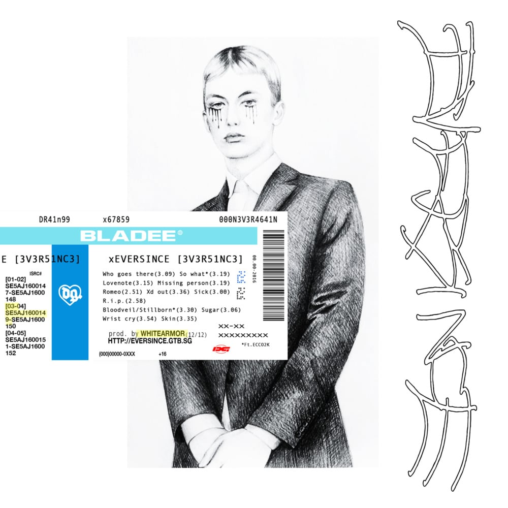

Eversince is the debut studio album by Swedish rapper and Drain Gang member Bladee. It was released on May 25, 2016 by YEAR0001. The album contains elements of hip hop, R&B, gothic rock, new wave music, and electronic music.
1. "Who Goes There" 3:09
2. "So What" (featuring Ecco2K) 3:19
3. "Lovenote" 3:16
4. "Missing Person" 3:20
5. "Romeo" 2:51
6. "Xd Out" 3:37
7. "Sick" 3:00
8. "Rip" 2:55
9. "Bloodveil / Stillborn" (featuring Ecco2k) 3:30
10. "Sugar" 3:06
11. "Wrist Cry" 3:55
12. "Skin" 3:36
Total length: 39:32